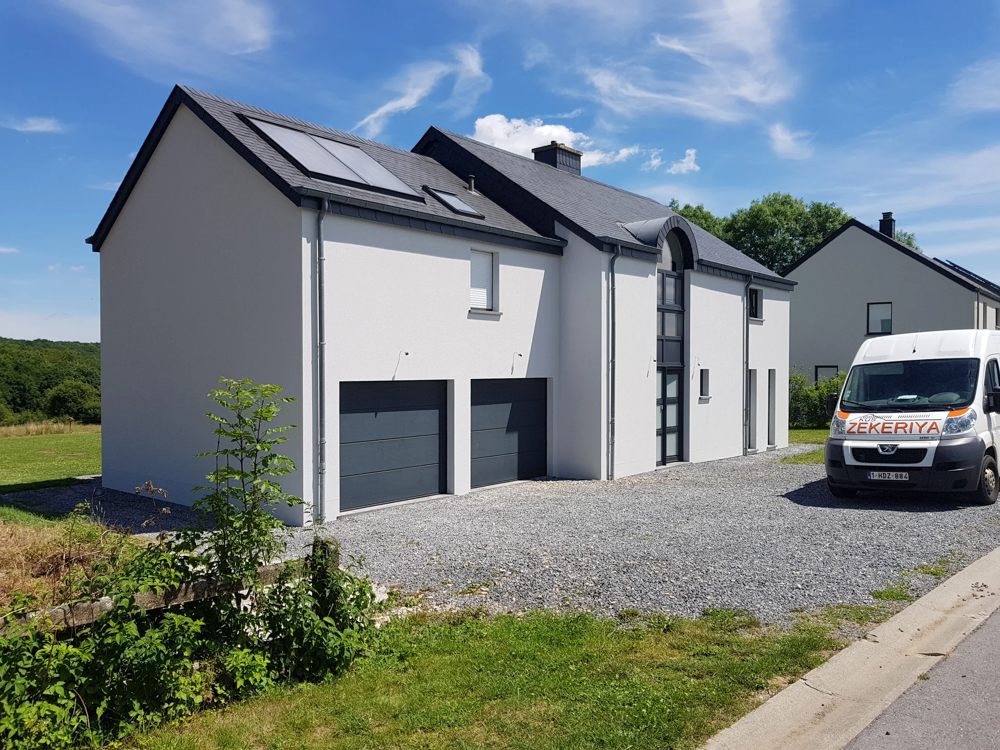
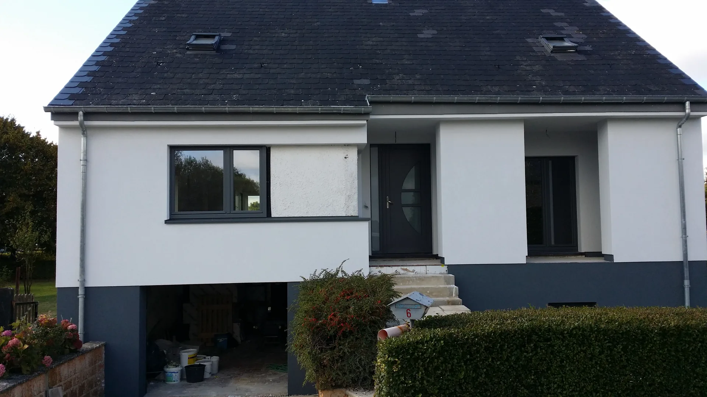
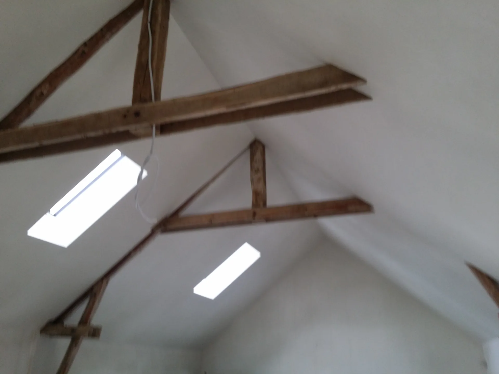

25 ans d'expérience à Vaux-sur-Sûre. Finitions lisses prêtes à peindre, façades isolantes avec primes Wallonie.
Devis gratuit 48h


Intervention : Vaux-sur-Sûre, Bastogne, Arlon, Libramont, Neufchâteau, Marche-en-Famenne, Virton, Étalle, Martelange, Fauvillers, Houffalize, Saint-Hubert et Grand-Duché de Luxembourg.